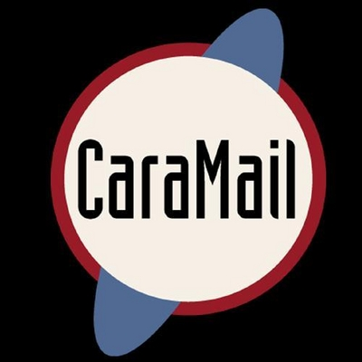
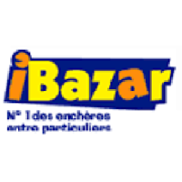
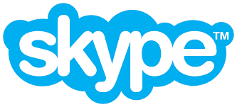
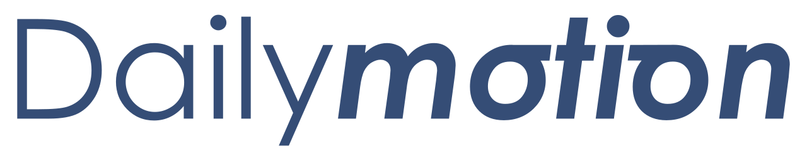
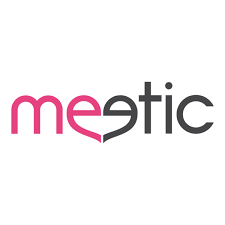
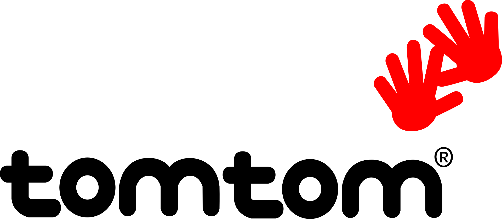
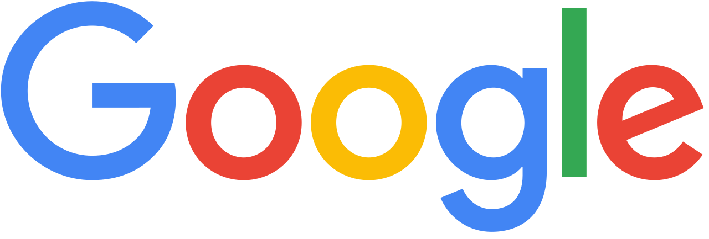
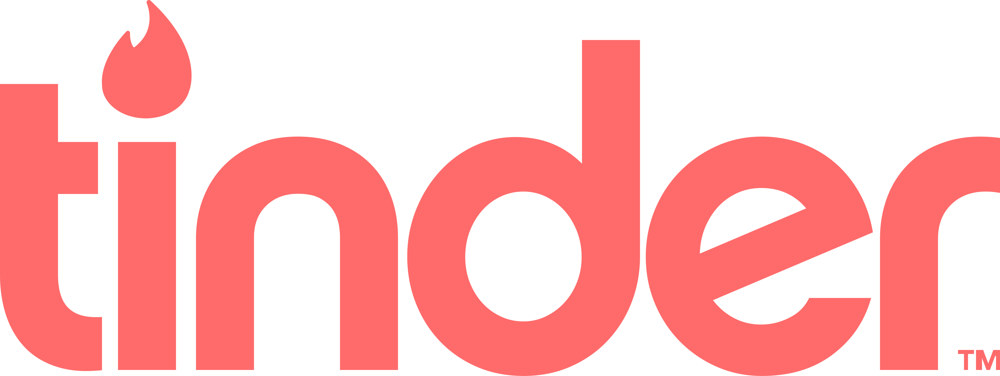
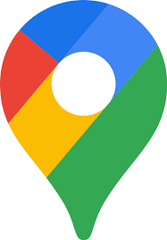

Partie 1 · La séquence
Une journée sur Internet,
avant les plateformes
La même journée, les mêmes gestes. À gauche, l'Internet de 2004 : une marque différente à chaque étape, et presque toutes européennes. À droite, 2026 : les mêmes besoins, absorbés par une poignée d'entreprises - toutes américaines.
EN 2004marques diverses · faites en Europe
07:30Je relève mes mails

08:00Je cherche une info
12:30J'achète un truc

18:00J'appelle mes potes

19:00Je publie ma vie
20:00Je regarde une vidéo

21:00Je cherche l'amour

22:00Je trouve mon chemin

8 services · 8 entreprises. 8 européennes, indépendantes.
EN 2026mêmes gestes · une poignée de propriétaires
07:30Je relève mes mails

08:00Je cherche une info
12:30J'achète un truc
18:00J'appelle mes potes
19:00Je publie ma vie
20:00Je regarde une vidéo
21:00Je cherche l'amour

22:00Je trouve mon chemin

8 services · 4 entreprises. 0 européenne.
On n'a pas seulement changé de marques. On a échangé un écosystème vivant, pluriel et largement européen contre quatre propriétaires américains. La suite du dossier raconte comment, enseigne après enseigne, l'archipel a été racheté.